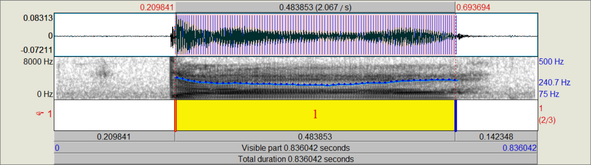
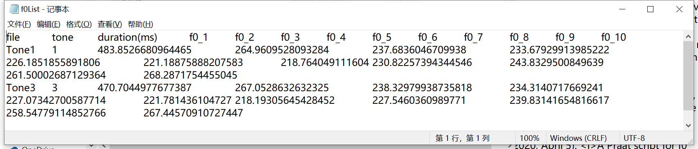

。Blog
<< 2020‧05‧13 |【Praat Script】f0 Extraction
Download the praat script here.
Function: This script will read in sound files and their correspondent TextGrids, and extract 10-point normalized f0 contour and the duration. It's possible to edit the script and obtain more or fewer than 10 points of f0.
TextGrid: The TextGrid tier name should be "1", or you can change it accordingly in the script. Don't use point tiers. Use the interval to mark the tone, and label the tone number, which will show up in the output table.

Files: Store the sound files and the TextGrid files (same name) under the same directory. Don't store other sound files or TextGrids in this folder.
Outputs: Find the results in Praat Objects - Table f0List, or in the newly generated "f0List.txt" under the same folder as where you store this script and your sound and TextGrid files.

Citation: Lin, Y. (2020, April 5). A Praat script for f0 extraction. Youran Lin.
https://youran-lin.github.io/blog_posts/20200513_f0PraatScript.html
Should you have any questions regarding this script, please feel free to contact me.